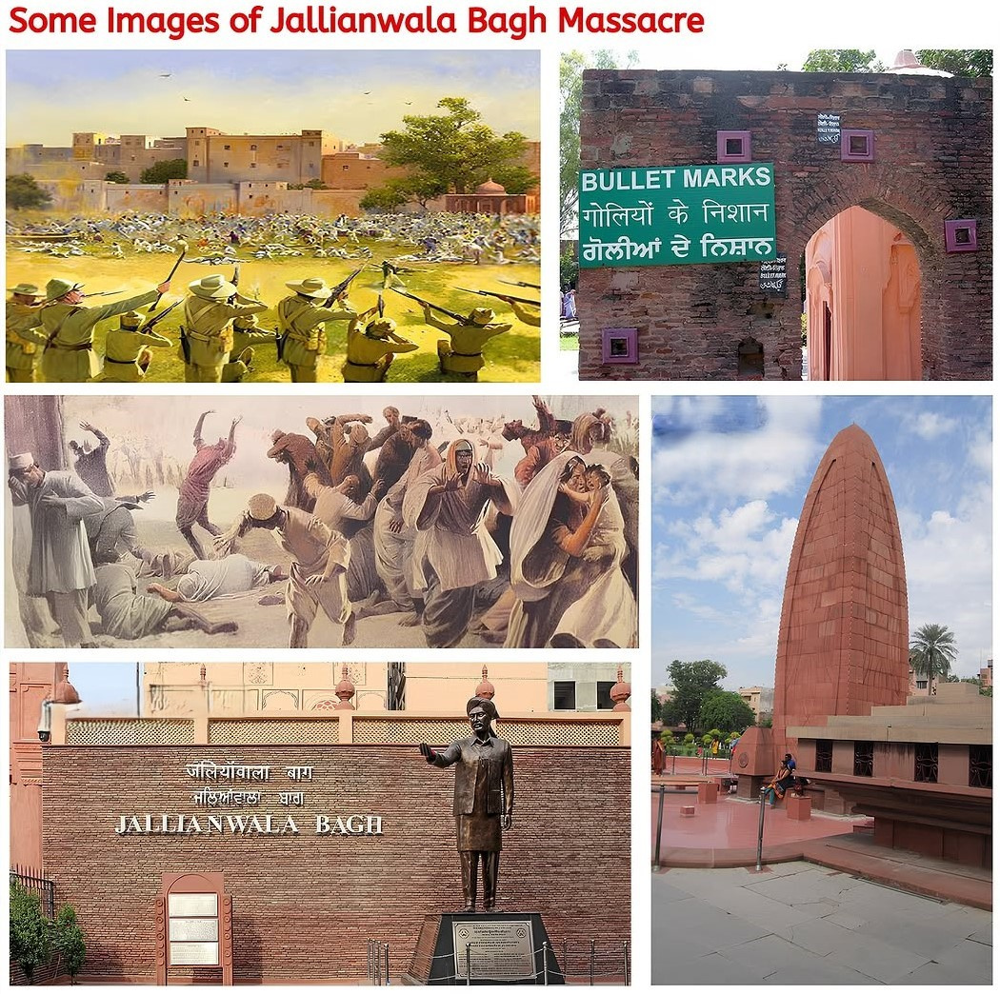
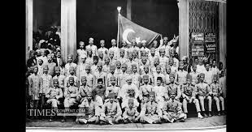
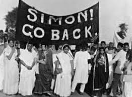
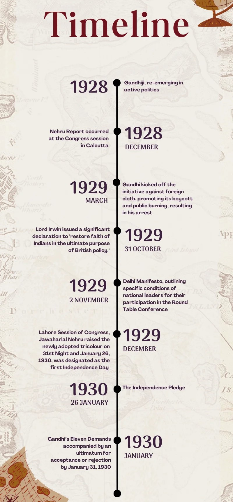
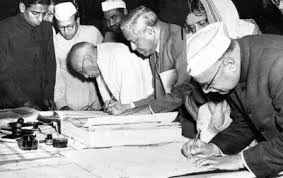
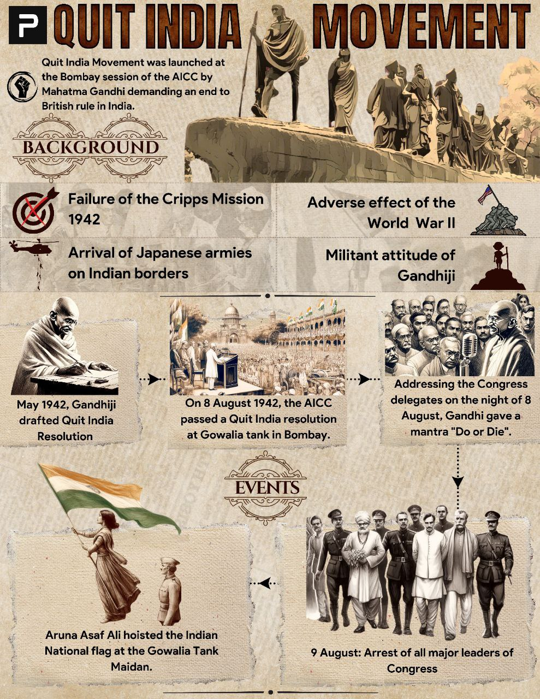
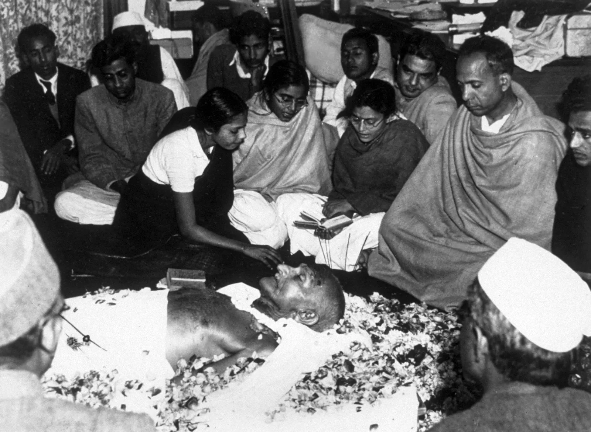

SSC CGL - Detailed Guide 2025
Self-Paced Course
Gandhian Era (1915–1948)
Reference: Lucent GK, NCERT Class 6–12
Arrival of Mahatma Gandhi (1915)
- Returned from South Africa in January 1915
- Introduced Satyagraha and Ahimsa (non-violence) as tools of resistance
- Joined Indian National Congress in 1916
- Initially studied Indian conditions for 1 year as advised by Gopal Krishna Gokhale

Early Satyagrahas before mass movements
| Movement | Year | Region | Issue |
|---|---|---|---|
| Champaran Satyagraha | 1971 | Bihar | Indigo farmers exploitation (Tinkathia system) |
| Kheda Satyagraha | 1918 | Gujarat | Tax relief during famine |
| Ahmedabad Mill Strike | 1918 | Gujarat | Workers’ wage dispute |

Rowlatt Act & Jallianwala Bagh Massacre (1919)
-
Rowlatt Act (1919)
- Also known as Black Act
- Allowed arrest without trial
- Strongly opposed by Gandhi
-
Jallianwala Bagh Massacre (13 April 1919)
- Location: Amritsar, Punjab
- General Dyer ordered firing on a peaceful gathering
- Hundreds killed, including women and children
- Marked a turning point in nationalist struggle
Khilafat Movement (1919–1924)
- Started to protect the Caliph (Khalifa) of Turkey after WWI
- Leaders: Ali Brothers – Maulana Mohammad Ali and Shaukat Ali
- Gandhi supported it to unite Hindus and Muslims
- Merged with Non-Cooperation Movement

Non-Cooperation Movement (1920–22)
-
Objective:
- Protest against Jallianwala Bagh massacre, Rowlatt Act, and Khilafat injustice
-
Features:
- Boycott of British titles, schools, courts, foreign goods
- Promotion of Swadeshi and Khadi
-
Chauri Chaura Incident (1922)
- Protestors set fire to police station → 22 policemen killed
- Gandhi withdrew the movement due to violence
Simon Commission (1927)
- No Indian member → "Simon Go Back" slogan
- Nationwide protests
- Lala Lajpat Rai injured during protest → died later
- Bhagat Singh avenged Lala’s death by killing Saunders


Civil Disobedience Movement (1930–34)
-
Trigger: Salt Law
- Dandi March (12 March – 6 April 1930)
- From Sabarmati Ashram to Dandi (240 km)
- Gandhi broke Salt Law by making salt
-
Features:
- Refusal to pay taxes
- Boycott of British goods
- No cooperation with govt
-
Gandhi-Irwin Pact (1931)
- Gandhi agreed to attend 2nd Round Table Conference in London
- Govt. agreed to release political prisoners
-
Outcome:
- Failed after Round Table Conference
- Movement revived in 1932
Government of India Act (1935)
- Introduced provincial autonomy
- Led to elections of 1937 → Congress formed ministries in 7 provinces


Quit India Movement (1942)
-
Started: 8 August 1942, Bombay
- Gandhi’s slogan: "Do or Die"
- Mass protests, strikes, underground activities
-
Govt Reaction:
- Immediate arrest of all top leaders (Gandhi, Nehru, Patel)
-
Outcome:
- Brutally suppressed by British
- Marked the final mass movement
-
Outcome:
- Failed after Round Table Conference
- Movement revived in 1932
Gandhi’s Role in Partition & Independence
- Gandhi opposed Partition, but accepted it to avoid civil war
- Mountbatten Plan led to Partition of India (1947)
-
Assassination of Gandhi:
- Date: 30 January 1948
- Assassin: Nathuram Godse
- Location: Birla House, Delhi

Quick Revision
| Event | Year | Features | SSC Points |
|---|---|---|---|
| Champaran Satyagraha | 1917 | Indigo farmers | 1st Satyagraha in India |
| Rowlatt Act | 1919 | No trial law | Protested by Gandhi |
| Jallianwala Bagh | 1919 | Massacre | General Dyer |
| Khilafat | 1919 | Save Caliph | Ali Brothers |
| NCM | 1920-22 | Boycott, Chauri Chaura | Withdrawn by Gandhi |
| Simon Commission | 1927 | No Indian | Simon Go Back |
| CDM | 1930-34 | Dandi March | Salt law broken |
| Quit India | 1942 | Do or Die | Crushed, final movement |
| Gandhi's death | 1948 | Assassinated by Godse | Birla House |
Developed By Roopasree Challa
Next
Start Your SSC CGL Journey Now!
Join Courage Library to experience disciplined study and expert support.
Book Your Slot Now!